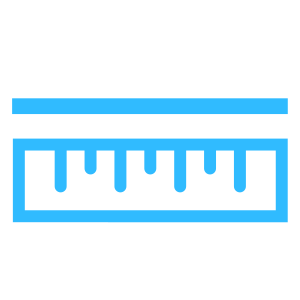
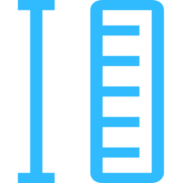
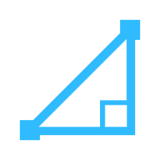
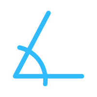

<!DOCTYPE html>
<html lang="en"></html>
<html class="no-js css-menubar" lang="zh-cn">

<head>
    <title>弹窗子页面</title>
    <meta charset="utf-8">

    <script src="Cesium/Cesium.js"></script>
    <link rel="stylesheet" href="Cesium/Widgets/widgets.css">
    <link rel="stylesheet" href="../../new.css">

 
   


    <style>
        .item{
            margin: 10px;
            height: 50px;
            line-height: 50px;
            width: 200px;
            background-color: #2874a7;
            color: white;
            font-size: 20px;
            text-align: center;
            border-radius: 5%;
            cursor:pointer;
            box-shadow: 0 0 1px 1px #66ccff;
        }
        .btn_none {
            background: none;
            /*color: #bffbff;*/
            color: #30bbff;
            font-size: 12px;
        }
        .btn_none:hover {
            color: #00ffff;

        }


        .btn-group {
            display: flex;
            align-items: flex-start;
            flex-wrap: wrap;
            padding-left: 20px;
        }

        .tool-btn {
            cursor: pointer;
            user-select: none;
            min-width: 62px;
            height: 96px;
            box-sizing: border-box;
            margin: 0 26px 10px 0;
            text-align: center;
            padding-top: 12px;
        }

        .tool-thum {
            transition: all .2s ease;
            width: 45px;
            height: 45px;
            margin: 0 auto;
            /*border-radius: 50%;*/
            margin-bottom: 10px;
            /*background: #fd960f;*/
            cursor: pointer;
            background: url('image/iconButtonBg.png') bottom center no-repeat;
            background-size: 100% 100%;
        }
        .tool-thum:hover{
            background: url('image/iconButtonBg_h.png') bottom center no-repeat;
            background-size: 100% 100%;
        }

        .tool-thum img {
            width: 22px;
            height: 22px;
            margin: 11px;
            fill: #30bbff;;
        }
/*清空按钮*/
        #btn_measure_clear {
            background: url('../../img/UI/button_b.png') bottom center no-repeat;
            background-size: 100% 100%;
            color: #30bbff;
            margin-top: 15px;
            width: 135px;
            /*border-radius: 15px;*/
            padding-left: 30px;
            padding-right: 30px;
        }
        #btn_measure_clear:hover {
            background: url('../../img/UI/button_h.png') bottom center no-repeat;
            background-size: 100% 100%;
            color: #fff;
            margin-top: 15px;
            /*border-radius: 15px;*/
            padding-left: 30px;
            padding-right: 30px;
        }
/*下拉菜单*/
        .form-control{
            /*清除原样式*/
            -webkit-appearance: none;   /* google */
            -moz-appearance: none;  /* firefox */
            appearance: none;       /* IE */

            /*width: 150px;*/
            border: 1px solid #00ffff;
            background: #16608f;
            color: #00ffff;
            border-radius: 0px;
            /*margin-right: 10px;*/
        }
        option {
            background: #16608f;
            border:1px solid #00ffff;
            padding-right: 10px;
            padding-left: 10px;
            -webkit-appearance: none;
            appearance: none;
            color: #00ffff;
        }

        option:hover {
            background-color: #00fff4;
            border: none;
        }

        .cesium-widget-credits {
            display: none !important;
            visibility: hidden !important;
            }
    </style>
    
</head>


<body style="padding:0px;text-align:center;" title="提示：单击按钮激活对应功能,在地图上单击开始，绘制中单击增加点、双击结束。">

    <div id="cesiumContainer" style="position: absolute;width: 100%;height: 100%;left: 0%;top: 0%;"></div>
    <!--<div style="position: absolute;z-index:10;top: 10px;left: 10px;">
        <div class="item" id="draw">绘制压平线</div>
        <div class="item" id="remove">清除压平点</div>

        <div class="item" id="sourcepointdom" onclick="yuanshi()">原始点云数据</div>
        <div class="item" id="feturepointdom" onclick="tezheng()">特征提取算法</div>
        <div class="item" id="meshdom">重建算法</div>
        <div class="item" id="polymeshdom">矢量重建算法</div>
        <div class="item" id="texturemeshdom">纹理映射算法</div>
        <div class="item" id="modelfalse">模型消除</div>
        <div class="item" id="modelfalse"onclick="back()">返回</div>
        
    </div>-->
    <div class="btn-group" style="opacity: 0.8;position: absolute;z-index:10;width: 20%;height: 60%;z-index: 2;top: 20%;">
    <div style="position: absolute;top: 0%;width: 100%;height: 20%;border-style: solid;background-color: #262e46;border-style: solid;border-color: #27bdb7;">
        <div id="draw" class="tool-btns" style="position: absolute;left: 0%;top: 20%;width: 33%;height: 100%;">
                <div class="tool-thum"></div>
                <span class="btn_none"> 绘制压平线 </span>
            </div>
        
            <div id="remove" class="tool-btns" style="position: absolute;left: 33%;top: 20%;width: 33%;height: 100%;">
                <!--<div  class="tool-thum" style="background: #c092fe;"></div>-->
                <div class="tool-thum"></div>
                <span class="btn_none"> 清除压平点 </span>
            </div>

            <div id="dth" class="tool-btns" style="position: absolute;left: 66%;top: 20%;width: 33%;height: 100%;" onclick="dantihua()">
                <!--<div  class="tool-thum" style="background: #c092fe;"></div>-->
                <div class="tool-thum"></div>
                <span class="btn_none"> 开/关单体化 </span>
            </div>
    </div>    
    <div style="position: absolute;top: 20%;width: 100%;height: 60%;border-style: solid;background-color: #262e46;border-style: solid;border-color: #27bdb7;">
        <div class="tool-btn" id="sourcepointdom" onclick="yuanshi()" style="position: absolute;top: 0%;left: 0%;width: 33%;height: 33%;">
            <!--<div  class="tool-thum" style="background: #3de3f4;"></div>-->
            <div class="tool-thum"></div>
            <span class="btn_none"> 原始点云数据 </span>
        </div>
    
        <div class="tool-btn" id="feturepointdom" onclick="tezheng()" style="position: absolute;top: 0%;left: 33%;width: 33%;height: 33%;">
            <!--<div  class="tool-thum" style="background: #55d5a0;"></div>-->
            <div class="tool-thum"></div>
            <span class="btn_none"> 特征提取算法 </span>
        </div>
    
        <div id="meshdom" class="tool-btn" style="position: absolute;top: 0%;left: 66%;width: 33%;height: 33%;">
            <!--<div  class="tool-thum" style="background: #37bc41;"></div>-->
            <div class="tool-thum"></div>
            <span class="btn_none"> 重建算法 </span>
        </div>
    
        <div id="polymeshdom" class="tool-btn" style="position: absolute;top: 33%;left: 0%;width: 33%;height: 33%;">
            <!--<div  class="tool-thum" style="background: #95d333;"></div>-->
            <div class="tool-thum"></div>
            <span class="btn_none"> 矢量重建算法 </span>
        </div>
    
        <div id="texturemeshdom" class="tool-btn" style="position: absolute;top: 33%;left: 33%;width: 33%;height: 33%;">
            <!--<div  class="tool-thum" style="background: #babc31;"></div>-->
            <div class="tool-thum"></div>
            <span class="btn_none"> 纹理映射算法 </span>
        </div>
        <div id="seg" class="tool-btn" style="position: absolute;top: 33%;left: 66%;width: 33%;height: 33%;" onclick="sega()">
            <!--<div  class="tool-thum" style="background: #babc31;"></div>-->
            <div class="tool-thum"></div>
            <span class="btn_none"> 模型分割 </span>
        </div>
        <div id="seg" class="tool-btn" style="position: absolute;top: 66%;left: 0%;width: 33%;height: 33%;" onclick="outmap()">
            <!--<div  class="tool-thum" style="background: #babc31;"></div>-->
            <div class="tool-thum"></div>
            <span class="btn_none"> 导出分析结果 </span>
        </div>
    </div>
    <div style="position: absolute;top: 80%;width: 100%;height: 20%;border-style: solid;background-color: #262e46;border-style: solid;border-color: #27bdb7;">
        <div id="modelfalse" class="tool-btn" style="position: absolute;left: 0%;top: 0%;width: 33%;height: 100%;">
            <!--<div  class="tool-thum" style="background: #babc31;"></div>-->
            <div class="tool-thum"></div>
            <span class="btn_none"> 模型消除 </span>
        </div>
        
        <div id="modelfalse" class="tool-btn" onclick="comparepic()" style="position: absolute;left: 33%;top: 0%;width: 33%;height: 100%;">
            <!--<div  class="tool-thum" style="background: #babc31;"></div>-->
            <div class="tool-thum"></div>
            <span class="btn_none"> 对比图 </span>
        </div>

        <div id="modelfalses" class="tool-btn" onclick="back()" style="position: absolute;left: 66%;top: 0%;width: 33%;height: 100%;">
            <!--<div  class="tool-thum" style="background: #babc31;"></div>-->
            <div class="tool-thum"></div>
            <span class="btn_none"> 返回 </span>
        </div>
    </div>
</div>

<iframe src="" id="cht" style="position: absolute;width: 40%;height: 60%;left: 30%;top: 20%;z-index: 15;display: none;"  frameborder="no"></iframe>

<!--页面js-->


<script>


  

</script>
<script src="view.js?time=20191008"></script>
</body>

</html>